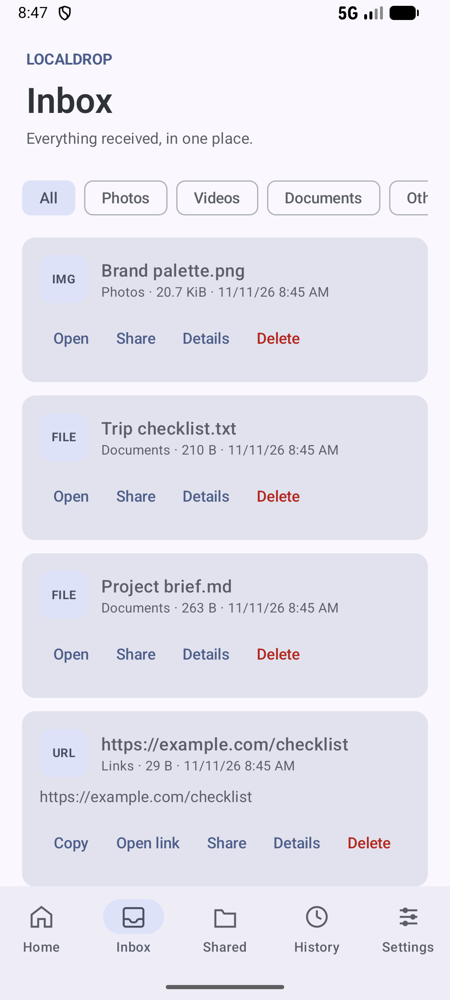
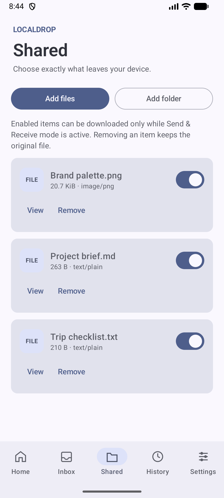
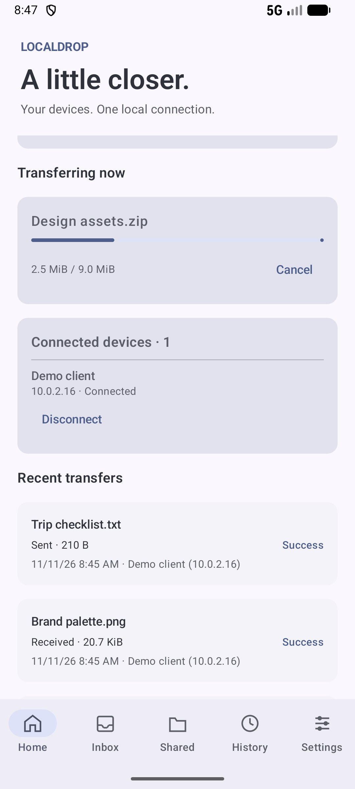
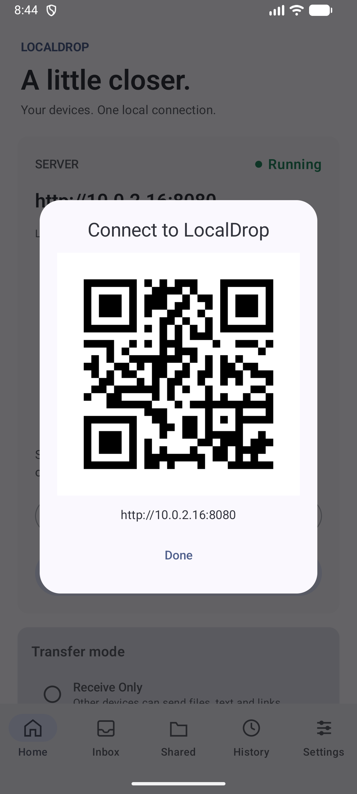
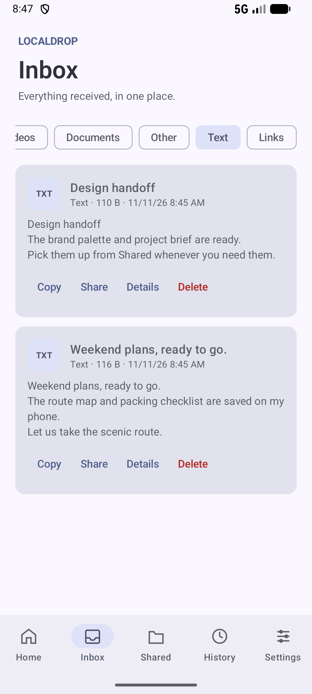
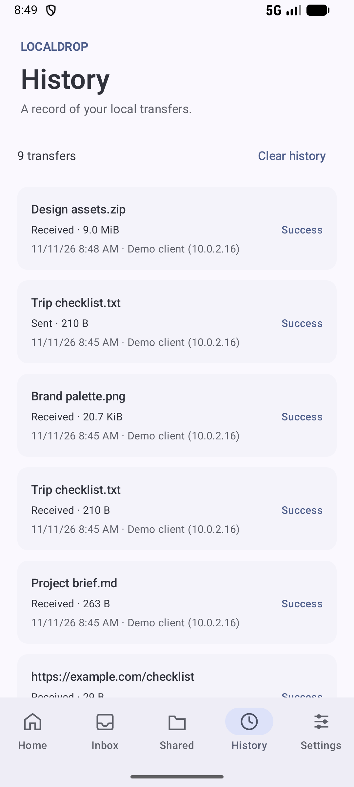
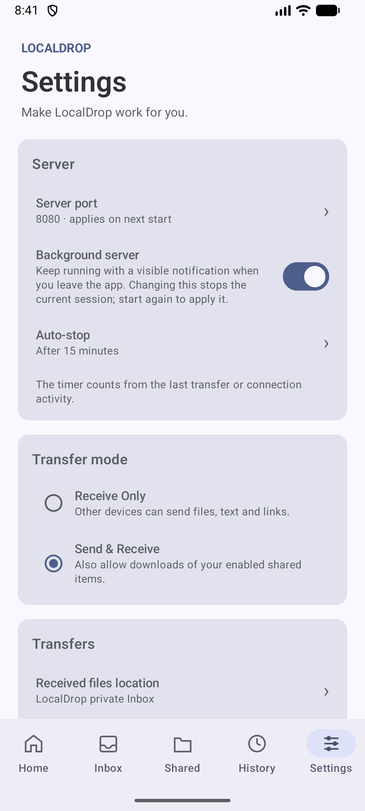

LocalDrop for Android
Your devices. One local connection.
LocalDrop shares files, photos, text and links between an Android device and a browser on the same local network.
Start a private session on your phone. Open the address on another device, or scan the QR code. The transfer goes directly from one device to the other.
No accounts. No cloud. No internet connection required.
Download LocalDrop
The first version is free.
Start a local sharing session when you need it, then stop the server when you are done.
Download LocalDrop for Android (.apk)
- Price: Free
- Platform: Android
- Version: 1.0.0
- Requires: Android 8.0 or later
- Distribution: Direct APK download
APK installation may require permission to install applications from outside the Google Play Store.
Installation
- Download the APK file to your Android device.
- Open the downloaded file.
- If Android requests permission to install apps from this source, follow the device instructions.
- Confirm the installation.
- Open LocalDrop and start the server when you want to share.
Android may display a security warning because this version is not distributed through Google Play.
Only download LocalDrop from the official download button on this page.
Features
A server you start yourself
The server stays off until you tap Start server. While it is running, LocalDrop shows the local address, port and a QR code.
By default the server stops when you leave the app. You can keep it running with a visible notification, and you can set it to stop after a period without transfer or connection activity.
Receive files, photos, text and links
Other devices send content into your Inbox. Filter by type, then open, share, copy or delete what you received.
Received files are saved on the Android device. You decide when to delete them.
Choose exactly what you share
Receive Only is the default. Other devices can send files, text and links to you.
Switch to Send & Receive when you also want them to download items you have enabled on the Shared screen. Add files or a folder, and turn each item on or off. Removing an item from Shared keeps the original file.
See what is happening
Watch an active transfer, cancel it, and see which device is connected. History keeps a local record of successful, failed and cancelled transfers.
You choose who can connect
Approve each browser on the Android device, or use a fresh PIN for the session. If both are on, a browser needs both. You can disconnect a device at any time.
Screenshots
LocalDrop 1.0.0. Scroll sideways to see the rest.


















Start a session
- Connect both devices to the same Wi-Fi or a supported hotspot.
- Open LocalDrop and leave Receive Only selected unless you also want to send files.
- Tap Start server and wait until the status says Running.
- On the other device, open the address in a browser or scan the QR code.
- Approve the connection on Android. Enter the session PIN if you turned that on.
- Send files, text or links. Stop the server when you are finished.
Use LocalDrop on a trusted private network. Ordinary HTTP is not encrypted, so other people who can see that network may be able to read a transfer.
Privacy
LocalDrop is designed to work without an account and without a cloud service for your files.
- No registration.
- No advertising profile.
- Files move directly between devices on your local network.
- Settings, history and received files stay on the device.
For the full explanation, read the LocalDrop Privacy Policy.
Frequently Asked Questions
Is this version free?
Yes. LocalDrop 1.0.0 is free.
Do I need an account or an internet connection?
No. LocalDrop does not ask you to register. A sharing session runs on your local network and does not need internet access.
Where do received files go?
They are saved on the Android device. By default they stay in LocalDrop’s private Inbox. You can choose another folder in Settings. You decide when to delete them.
Is the transfer encrypted?
No. LocalDrop uses ordinary HTTP. It is meant for a trusted private network. Stop the server when you are finished, and avoid sharing sensitive files on a public or untrusted network.
Why does Android display an installation warning?
Android may display a warning when installing applications downloaded outside Google Play.
If your device asks for permission to install apps from this source, you can allow it in the device settings and then open the APK again.
Technical Support
If you experience problems, discover bugs, or would like to suggest improvements, please contact the developer through the contact page.
When reporting an issue, please include:
- Android version.
- Application version.
- Device model.
- A description of the problem.
- Steps to reproduce the issue, if possible.
Application Information
- Application: LocalDrop
- Developer: TheXcoder
- Platform: Android
- Version: 1.0.0
- Price: Free
LocalDrop by TheXcoder
A little closer. Your devices. One local connection.